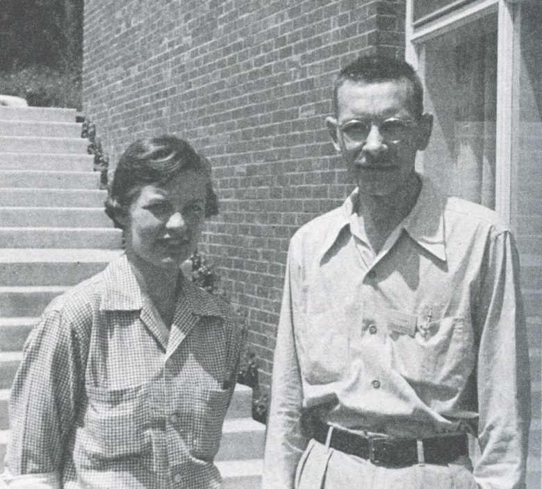
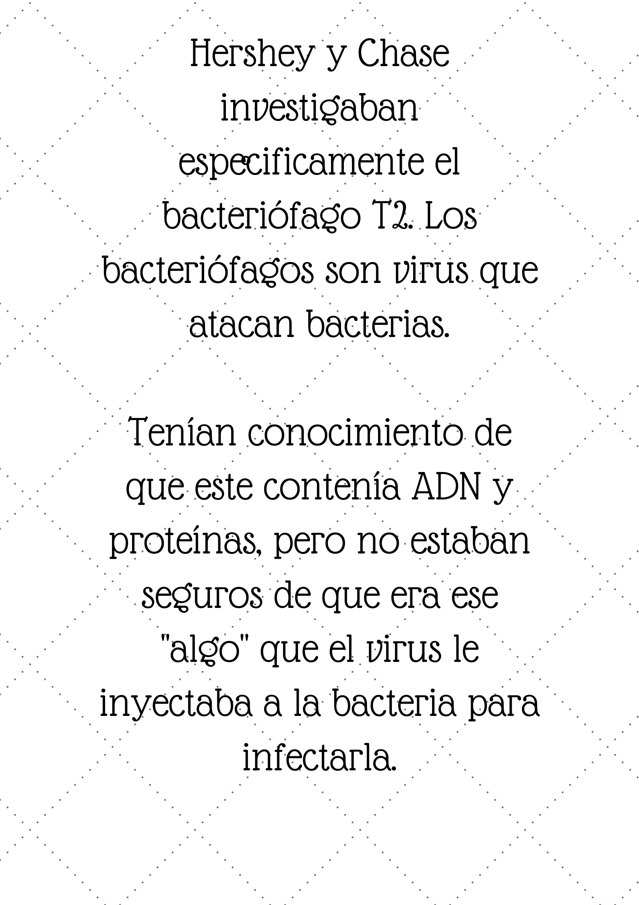
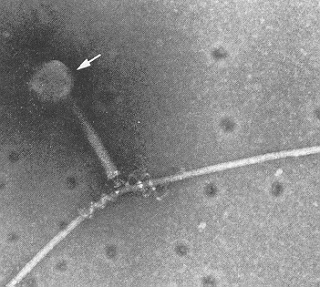
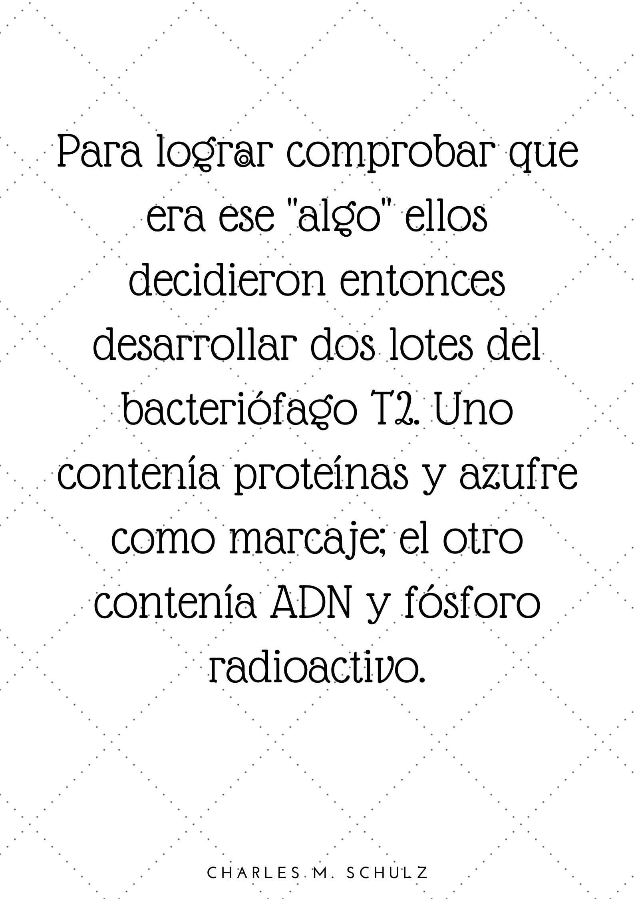
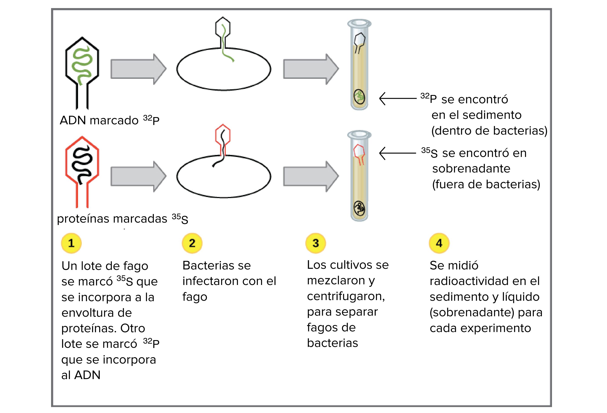
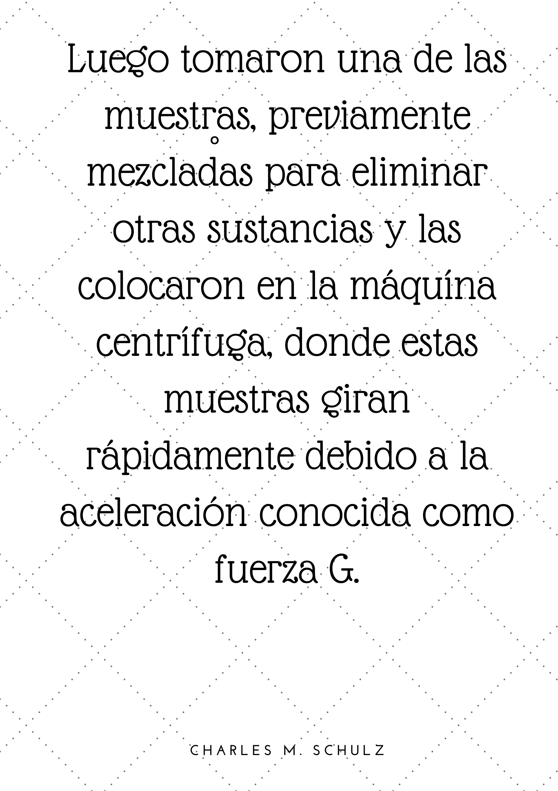
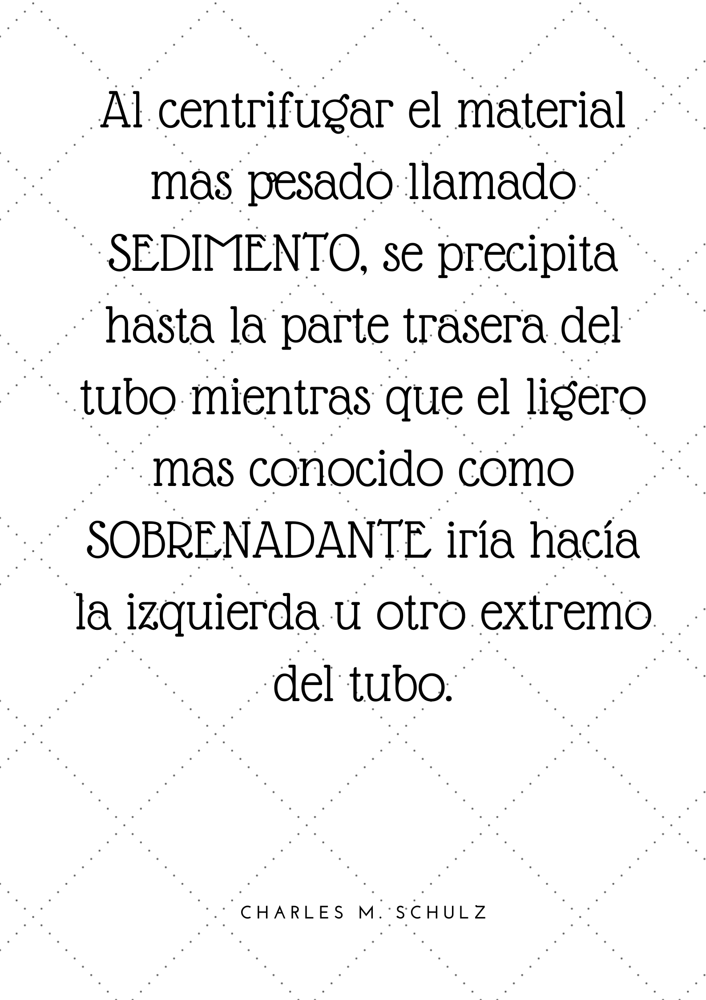
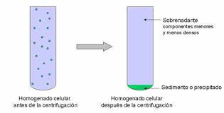
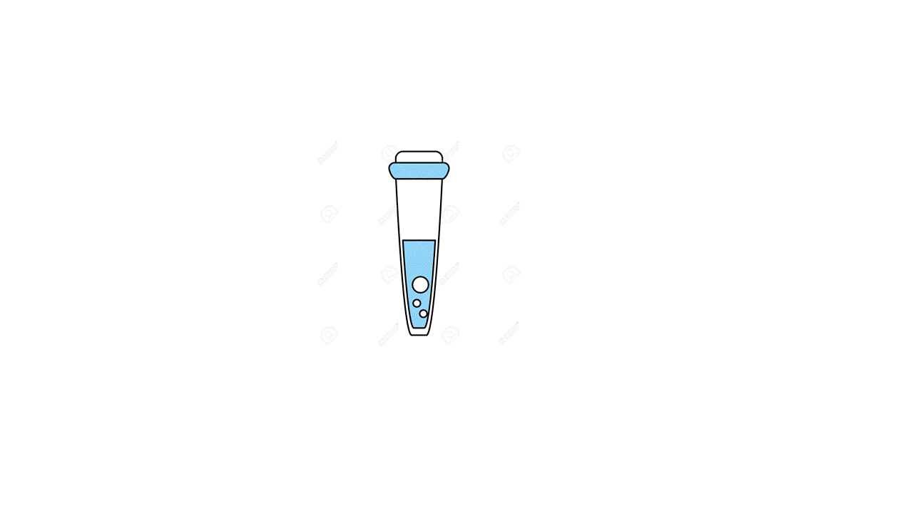

<!DOCTYPE html>
<html lang="en">
<head>
    <link rel="stylesheet" href="style.css">
    <meta charset="UTF-8">
    <meta name="viewport" content="width=<link href="https://fonts.googleapis.com/css?family=Josefin+Sans:300,400|Montserrat&display=swap" rel="stylesheet">

    <header id="header">
       
        <div>
      
      <nav id="nav-bar" class="nav-bar">
        <input id="nav-btn" class="nav-btn" type="checkbox" />
        <label class="nav-icon" for="nav-btn"><span class="hamburger"></span></label>
        <ul class="nav">
          <li><a class="nav-link" href="#products">Experimentos</a></li>
          <li><a class="nav-link" href="#testimonials">Conclusiones</a></li>
          <li><a class="nav-link" href="#newsletter">Referencias</a></li>
          <li><a class="nav-link" href="#connect-contact">Mas info :)</a></li>
         </ul>
      </nav>
    </div>
    </header>
    
    <main>
      <section id="intro">
        <div class="figure-intro">
          
          
        </div>
    
        <h1>Martha Chase y Alfred Hershey <br>En el año 1950 Chase llego como ayudante a la investigación de Hershey, y su pasión por los bacteriófagos los llevo a una investigación de mayor nivel. <span class="uppercase accent"></span> <br>.</h1>
      </section>
    
      <section class="products">
        <a id="products"></a>
        <h2 class="uppercase accent">Experimentos</h2>
        <p>Explicación breve</p>
    
        <div class="img-product-group">
          
          
          
          
          
          <div class="product-quote portrait">
            
          </div>
          
          
          
        </div>
      </section>
    
    
    
      <section class="testimonials">
        <a id="testimonials"></a>
        <h2 class="uppercase accent">Conclusiones</h2>
        <p>¿Qué ocurrió entonces?</p>
        <audio controls
         <source src="audio/audio3.mp3" type="audio/mpeg">
        </audio>

        
      </section>
    </main>
    
    <footer id="footer">
      <section class="newsletter">
        <a id="newsletter"></a>
        
        <h2 class="uppercase accent">Feliz día del maestro!</h2><br>
        <p>Bibliografía.</p><br>
        <br> Classic experiments: DNA as the genetic material (article) | Khan Academy. (2020). Retrieved 16 May 2020, from https://www.khanacademy.org/science/biology/dna-as-the-genetic-material/dna-discovery-and-structure/a/classic-experiments-dna-as-the-genetic-material
    
      
      </section>
    
      <div class="connect-contact">
        <a id="connect-contact"></a>
       
        </section>
    
        <section class="contact">
          <h4>Introducción biología celular y laboratorio</h4><br>
          <p>UNVIVERSIDAD EAFIT</p><br>
          <p><strong>2020</strong></p><br>
          <p><strong></strong> </p>
        </section>
      </div>
    </footer>
    <title>Document</title>
</head>
<body>
    
</body>
</html>